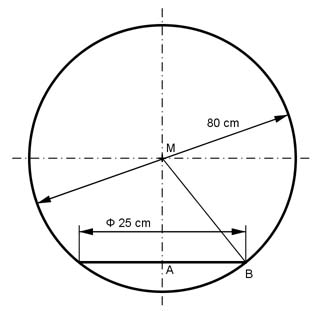

Aufgabe 382 Eine Zierkugel mit einem Durchmesser von 80 cm ist so abgeflacht, dass die Auflagefläche einen Durchmesser von 25 cm hat. Wie groß ist das Volumen V der Kugel?  Von der Kugel ist ein Kugelabschnitt abgetrennt: V = VKugel - VKugelabschnitt dKugel³ * л 80³ cm³ * л VKugel = -------------- = -------------- = 267 946 cm³ 6 6 Satz von Pythagoras im Dreieck ABM: rKugel = dKugel/2 = 80 cm/2 = 40 cm BM = rKugel AB = 25 cm/2 = 12,5 cm BM² = AB² + AM² | -AB² AM² = BM² - AB² = 40² cm² - 12,5² cm² = 1 443,75 mm² |√ AM = 38 cm hKugelabschnitt = 40 cm - 38 cm = 2 cm л VKugelabschnitt = --- * hKugelabschnitt² * (3 * rKugel - hKugelabschnitt) 3 л VKugelabschnitt = --- * 2² * (3 * 40 - 2) cm³ = 494 cm³ 3 V = 267 946 cm³ - 494 cm³ = 267 452 cm³ = 267,45 dm³